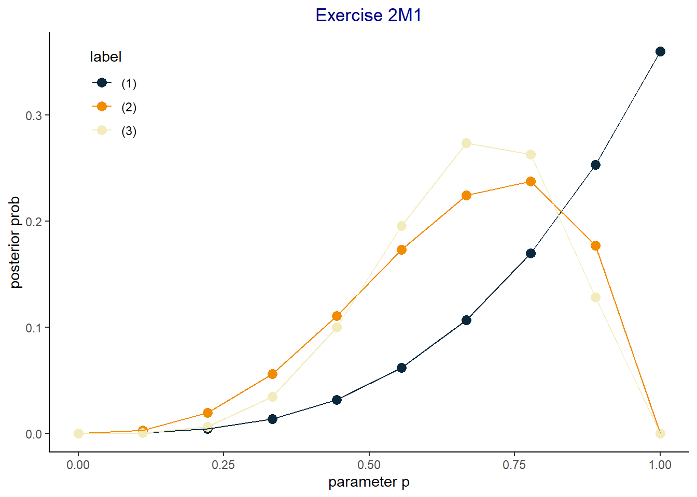
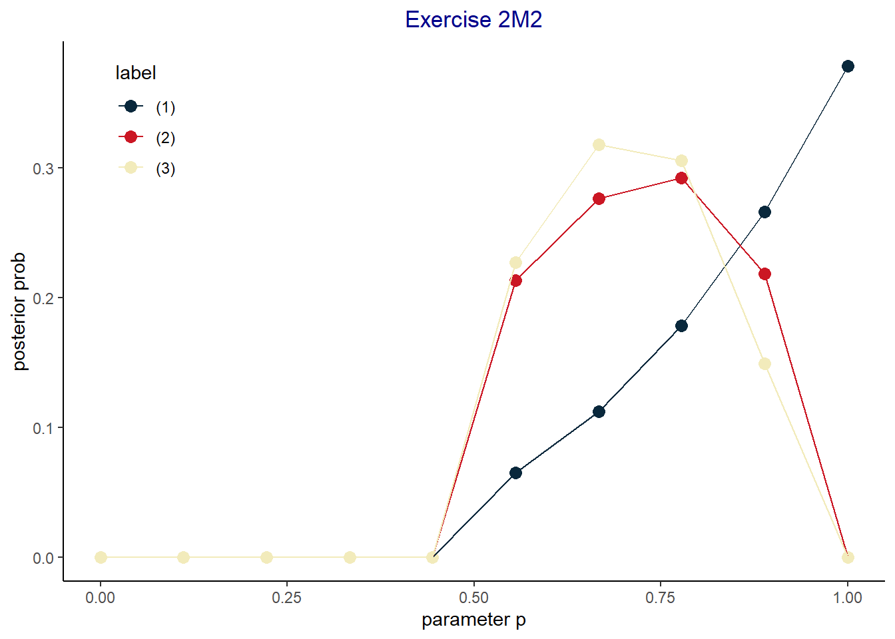

# function to calculate the posterior grid as per 2M1
calc_post_water <- function(obs, grid_size, label) {
# Parameters:
# obs: Character vector of observation with W and L
# grid_size: Number of grid elements
# label: String to identify the data, used later to plot
# convert to boolean values
obs <- obs == "W"
# create a grid of possible values for the parameter p
param_grid <- seq(from = 0, to = 1, length.out = grid_size)
# the prior is uniformely distributed
prior_grid <- dunif(x = param_grid, min = 0, max = 1)
# the likelihood is binomial
like_grid <- dbinom(x = sum(obs),
size = length(obs),
prob = param_grid)
# compute the posterior
post_grid <- like_grid * prior_grid
# standardize the posterior by dividing by the sum of its possible values
post_grid <- post_grid / sum(post_grid)
# add param grid and build a dataframe
post_grid <- data.frame(param = param_grid,
post = post_grid,
label = rep(label, times = grid_size),
stringsAsFactors = FALSE)
return(post_grid)
}2 Small Worlds and Large Worlds
2E1
\(Pr(rain \mid Monday)\) and \(\frac{Pr(rain, Monday)}{Pr(Monday)}\)
2E2
Prob that it is Monday, given it is raining
2E3
\(Pr(Monday \mid rain)\) and \(\frac{Pr(rain \mid Monday)Pr(Monday)}{Pr(rain)}\)
2E4
Based on what we observe small world, the earth, we conjecture that water occupies 70% of the space.
2M1
Creating the function to compute the grid
2M1 (1)
Compute the grid for the given data using the function defined just abov
post_grid_1 <- calc_post_water(c("W", "W", "W"), 10, "(1)")
post_grid_1 param post label
1 0.0000000 0.0000000000 (1)
2 0.1111111 0.0004938272 (1)
3 0.2222222 0.0039506173 (1)
4 0.3333333 0.0133333333 (1)
5 0.4444444 0.0316049383 (1)
6 0.5555556 0.0617283951 (1)
7 0.6666667 0.1066666667 (1)
8 0.7777778 0.1693827160 (1)
9 0.8888889 0.2528395062 (1)
10 1.0000000 0.3600000000 (1)2M1 (2)
post_grid_2 <- calc_post_water(c("W", "W", "W", "L"), 10, "(2)")2M1 (3)
post_grid_3 <- calc_post_water(c("L", "W", "W", "L", "W", "W", "W"), 10, "(3)")plot
And visualize the results
pd <- rbind(post_grid_1, post_grid_2, post_grid_3) # data for graph
p2M1 <- ggplot(data = pd, mapping = aes(x = param, y = post, color = label)) +
geom_point(size = 3) + geom_line() +
scale_color_paletteer_d(palette = "futurevisions::atomic_orange") +
theme_classic() +
theme(plot.title = element_text(color = "dark blue", hjust = 0.5),
legend.position = c(0.1, 0.85)) +
labs(title = "Exercise 2M1", x = "parameter p", y = "posterior prob")
p2M1
2M2
See R code 2.5 in for example of such a prior.
# function to calculate the posterior grid as per 2M1
calc_post_water <- function(obs, grid_size, label) {
# Parameters:
# obs: Character vector of observation with W and L
# grid_size: Number of grid elements
# label: String to identify the data, used later to plot
# convert to boolean values
obs <- obs == "W"
# create a grid of possible values for the parameter p
param_grid <- seq(from = 0, to = 1, length.out = grid_size)
# the prior is uniformely distributed
prior_grid <- ifelse(param_grid >= 0.5, 0.1, 0)
# the likelihood is binomial
like_grid <- dbinom(x = sum(obs),
size = length(obs),
prob = param_grid)
# compute the posterior
post_grid <- like_grid * prior_grid
# standardize the posterior by dividing by the sum of its possible values
post_grid <- post_grid / sum(post_grid)
# add param grid and build a dataframe
post_grid <- data.frame(param = param_grid,
post = post_grid,
label = rep(label, times = grid_size),
stringsAsFactors = FALSE)
return(post_grid)
}2M2 (1)
Compute the grid for the given data using the function defined just abov
post_grid_1 <- calc_post_water(c("W", "W", "W"), 10, "(1)")
post_grid_1 param post label
1 0.0000000 0.00000000 (1)
2 0.1111111 0.00000000 (1)
3 0.2222222 0.00000000 (1)
4 0.3333333 0.00000000 (1)
5 0.4444444 0.00000000 (1)
6 0.5555556 0.06493506 (1)
7 0.6666667 0.11220779 (1)
8 0.7777778 0.17818182 (1)
9 0.8888889 0.26597403 (1)
10 1.0000000 0.37870130 (1)2M2 (2)
post_grid_2 <- calc_post_water(c("W", "W", "W", "L"), 10, "(2)")2M2 (3)
post_grid_3 <- calc_post_water(c("L", "W", "W", "L", "W", "W", "W"), 10, "(3)")2M2 plot
And visualize the results
pd <- rbind(post_grid_1, post_grid_2, post_grid_3) # data for graph
p2M2 <- ggplot(data = pd, mapping = aes(x = param, y = post, color = label)) +
geom_point(size = 3) + geom_line() +
scale_color_paletteer_d(palette = "futurevisions::atomic_red") +
theme_classic() +
theme(plot.title = element_text(color = "dark blue", hjust = 0.5),
legend.position = c(0.1, 0.85)) +
labs(title = "Exercise 2M2", x = "parameter p", y = "posterior prob")
p2M2
2M3
We first need to formulate the probabilites
\[ \begin{equation} P(Earth \mid Land) = \\ \frac{P(Earth, Land)}{P(Land)} = \\ \frac{P(Land \mid Earth) \cdot P(Earth)}{P(Land)} = \\ \frac{P(Land \mid Earth) \cdot P(Earth)} {P(Land \mid Earth) \cdot P(Earth) + P(Land \mid Mars) \cdot P(Mars)} \end{equation} \]
prob_earth <- 0.5
prob_mars <- 1 - prob_earth
prob_water_earth <- 0.7
prob_water_mars <- 0
prob_land_earth <- 1 - prob_water_earth
prob_land_mars <- 1 - prob_water_mars
# Pr(Earth | Land) = Pr(Earth, Land) / Pr(Land) = Pr(Land | Earth) * P(Earth) / Pr(Land) =
# Pr(Land | Earth) * P(Earth) / (Pr(Land | Earth) * Pr(Earth) + Pr(Land | Mars) * Pr(Mars))
(prob_land_earth * prob_earth) /
(prob_land_earth * prob_earth + prob_land_mars * prob_mars)[1] 0.23076922M4
We have the random variables
\(F\): Represent the face that we see.
- \(F=b\): We see the black side.
- \(F=w\): We see the white face.
\(H\): Represent the face that we don’t see, the hidden face.
- \(H=b\): The hidden side is black.
- \(H=w\): The hidden side is white.
The probabilities of \(F\) are \(P(F=b) = P(F=w) = 0.5\)
\(C=i\): Represents the card # i that we pick with the following values
\(C=1\): we pick card 1 which is black & black, notation
\(C=2\): we pick card 2 which is black & white
\(C=3\): we pick card 3 which is white & white
and the pdf of \(C\) is
| Card | Probability |
|---|---|
| \(C=1\) | \(\frac{1}{3}\) |
| \(C=2\) | \(\frac{1}{3}\) |
| \(C=3\) | \(\frac{1}{3}\) |
\[ P(H=b \mid F=b) = \frac{P(H=b,F=b)}{P(F=b)} = \frac{P(C=1)}{P(F=b)}= \\ \frac{P(C=1)}{P(F=b \mid C=1)P(C=1) + P(F=b \mid C=2)P(C=2) + P(F=b \mid C=3)P(C=3)} \\ \frac{\frac{1}{3}}{1 \cdot \frac{1}{3} + 0.5 \cdot \frac{1}{3} + 0 \cdot \frac{1}{3}} = \frac{2}{3} \approx 0.67 \]
2M5
Using the same convention as in 2M4 and given that
| Card | Probability |
|---|---|
| \(C=1\) | \(\frac{2}{4}\) |
| \(C=2\) | \(\frac{1}{4}\) |
| \(C=3\) | \(\frac{1}{4}\) |
then, same as in 2M4 but with different probabilities,
\[ \frac{\frac{2}{4}}{1 \cdot \frac{2}{4} + 0.5 \cdot \frac{1}{4} + 0 \cdot \frac{1}{4}} = \frac{4}{5}=0.8 \]
2M6
| Card | Probability |
|---|---|
| \(C=1\) | \(\frac{1}{6}\) |
| \(C=2\) | \(\frac{2}{6}\) |
| \(C=3\) | \(\frac{3}{6}\) |
then, same as in 2M4 but with different probabilities,
\[ \frac{\frac{1}{6}}{1 \cdot \frac{1}{6} + 0.5 \cdot \frac{2}{6} + 0 \cdot \frac{3}{6}} = \frac{1}{2} \]
2M7
\(C_i\): The card chosen in the \(i\) pick \(F_i\): The face on the \(i\) pick \(H_i\): The hidden face of the card on the \(i\) pich
The joint probability table is
| \(C_1\) | \(C_2\) | \(F_1\) | \(H_1\) | \(F_2\) | \(H_2\) | freq | prob |
|---|---|---|---|---|---|---|---|
| 1 | 2 | b | b | b | w | 2 | \(\frac{2}{24}\) |
| 1 | 2 | b | b | w | b | 2 | \(\frac{2}{24}\) |
| 1 | 3 | b | b | w | w | 4 | \(\frac{4}{24}\) |
| 2 | 1 | b | w | b | b | 2 | \(\frac{2}{24}\) |
| 2 | 1 | w | b | b | b | 2 | \(\frac{2}{24}\) |
| 2 | 3 | b | w | w | w | 2 | \(\frac{2}{24}\) |
| 2 | 3 | w | b | w | w | 2 | \(\frac{2}{24}\) |
| 3 | 1 | w | w | b | b | 4 | \(\frac{4}{24}\) |
| 3 | 2 | w | w | b | w | 2 | \(\frac{2}{24}\) |
| 3 | 2 | w | w | w | b | 2 | \(\frac{2}{24}\) |
and using probabilities we have
\[ P(H_1 = b \mid F_1 = b, F_2 = w) = \\ \frac{P(H_1 = b, F_1 = b, F_2 = w)}{P(F_1=b, F_2=w)} = \\ \frac{P(F_2 = w, C_1 = 1)}{P(F_1=b,F_2=w,H_1=b)+P(F_1=b,F_2=w,H_1=w)} =\\ \frac{P(F_2 = w, C_1 = 1)} {P(F_2=w,C_1=1)+P(F_1=b,F_2=w,H_1=w)} =\\ \frac{\frac{2}{24} +\frac{4}{24}} {\frac{2}{24} + \frac{4}{24} + \frac{2}{24}}=\frac{3}{4}=0.75 \]
2H1
We use \(A,B\) to identify the species.
We use \(T_i=1,0\) to identify if birth at time \(i\) is twin \(T_i=1\) or singleton \(T_i=0\)
we have
\[ P(T_i=1 \mid A)=0.1 \\ P(T_i=1 \mid B)=0.2 \]
We need to find \(P(B_2=t \mid B_1=t)\) therefore
$$ P(T_2=1 T_1=1)=\ =\ =\ ==
$$
2H2
\[ P(A \mid T_1 = 1) = \frac{P(A, T_1=1)}{P(T_1=1)} = \\ \frac{P(T_1=1 \mid A)P(A)}{P(T_1=1 \mid A)P(A) + P(T_1=1 \mid B)P(B)} = \\ \frac{0.1 \cdot 0.5}{0.1 \cdot 0.5 + 0.2 \cdot 0.5} = \frac{1}{3} \approx 0.33 \]
2H3
since \(T_i\) are independent then
\[ P(A \mid T_1 = 1, T_2 =0)=\\ \frac{P(A,T_1=1,T_2=0)}{P(T_1=1,T_2=0)}=\\ \frac{P(T_1=1, T_2=0 \mid A)P(A)}{P(T_1=1,T_2=0\mid A)P(A) + P(T_1=1,T_2=0\mid B)P(B)}=\\ \frac{0.1 \times 0.9 \times 0.5}{(0.1 \times 0.9 \times 0.5) + (0.2 \times 0.8 \times 0.5)} = \frac{0.045}{0.045+0.08}=\frac{9}{25}=0.36 \]
2H4
The new genetic test, called \(G=a,b\) when it identifies species A or B with a and b.
\[ P(G=a \mid A) = 0.8 \\ P(G=b \mid B) = 0.65 \\ P(G=a \mid B) = 1- P(G=b \mid B) = 1-0.65=0.35 \]
Using the existing prior on the population of bear \(P(S=a)=(S=b)=0.5\)
\[ P(A | G=a)=\\ \frac{P(G=a \mid A) P(A)}{P(G=a)}=\\ \frac{P(G=a \mid A) P(A)}{P(G=a \mid A)P(A) + P(G=a \mid B)P(B)} = \\ \frac{0.8 \cdot 0.5}{0.8 \cdot 0.5 + (1-0.65) \cdot 0.5} = \frac{0.45}{0.45+0.325}=\frac{18}{25} = 0.72 \]
Which means that our prior of \(P(A)=0.5\) has been changed to \(0.72\) once we use the genetic test and therefore a better identification.
Similarly we will use the prior without genetic test in exercise 2H3 just above which had found \(P(A') = P(A \mid T_1 = 1, T_2 =0)=0.36\) and use the genetic test as a new prior \(P(A' \mid G=a)\)
\[ P(A' \mid G=a) = \\ \frac{P(G=a \mid A')P(A')}{P(G=a \mid A')P(A') + P(G=a \mid B')P(B')} \\ \frac{0.8 \cdot 0.36}{0.8 \cdot 0.36 + 0.35 \cdot (1-0.36)} \approx 0.56 \]